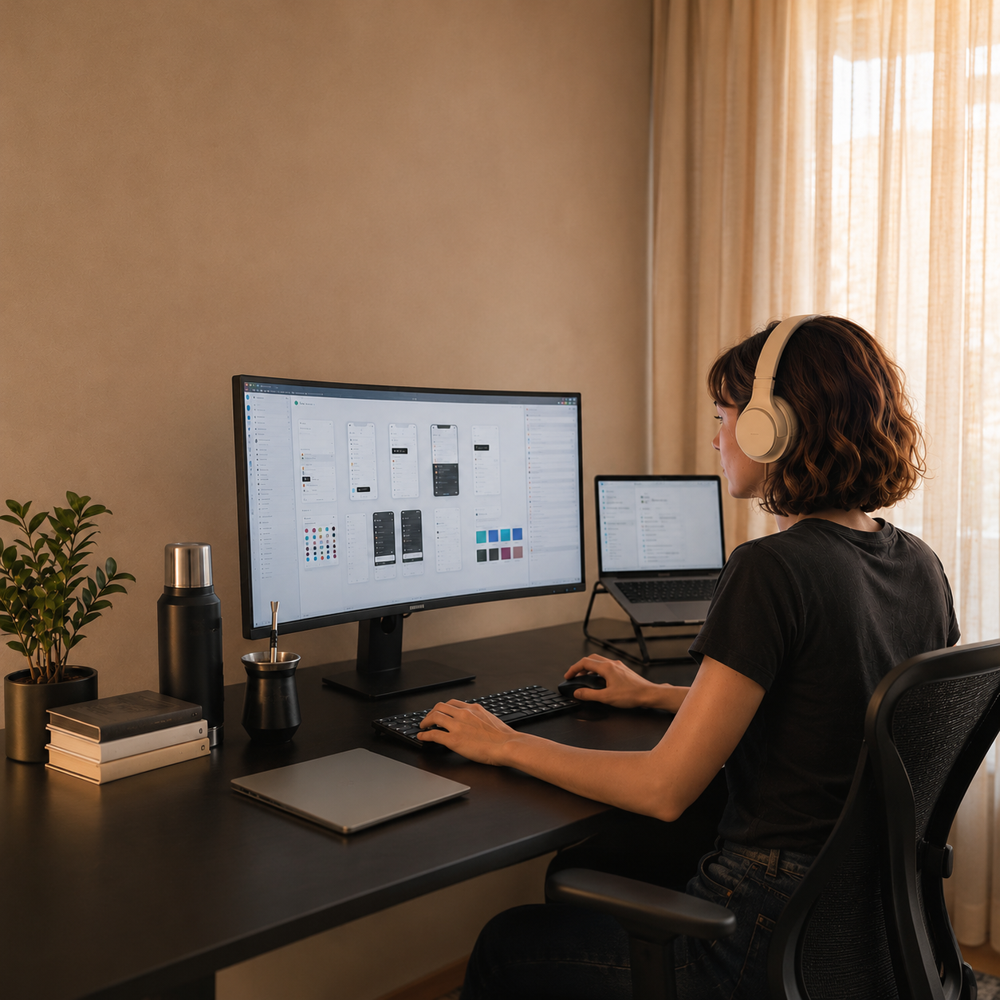

Interiorismo
El user journey en el espacio
Aprendí a mapear recorridos en espacios físicos. Hoy hago lo mismo con flujos digitales.

Mi formación en Interiorismo y Diseño Industrial me enseñó a observar cómo las personas interactúan con su entorno. Hoy aplico esa mirada al diseño digital, conectando necesidades reales con soluciones funcionales y objetivos de negocio.

Trayectoria
Interiorismo
Aprendí a mapear recorridos en espacios físicos. Hoy hago lo mismo con flujos digitales.
Diseño Industrial
De la ergonomía a la arquitectura de información. El principio es el mismo: menos fricción.
Ahora Ux/Ui
Design systems y productos SaaS B2B construidos desde el research hasta producción.
Qué aporto
Aprendí a leer cómo se mueve la gente antes de aprender a wireframear.
Observación en campo antes de hacer entrevistas. Primero los contextos reales, después el Zoom.
Desde ergonomía física hasta arquitectura de información — misma lógica.
Stack
Hacia donde voy
Sistemas que equipos de producto puedan implementar y escalar sin perder coherencia.
Diseño que se puede defender con métricas, no solo con criterio estético.
HTML/CSS para comunicarme con devs sin fricción y entregar especificaciones precisas.